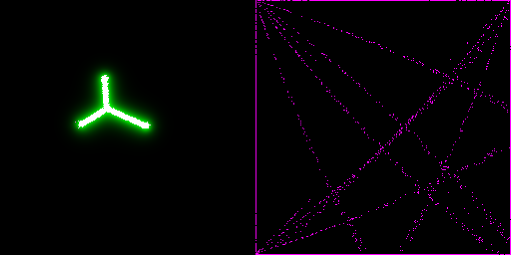

Site reliability engineer who builds AI systems end to end · Virginia, remote
I have run production infrastructure for fifteen years. For the past year I have built with coding agents as my
main way of working, and this page is what came out: working systems you can open, each with a section on where it breaks.
Each project below has the same four parts: the rough idea, what got built and how, a demo, and what would
fail first. The last part is the one I trust most.
Stage + Mod³ · Python and browser JavaScript · built in days, from a phone
The rough idea
A coding agent in a terminal is hard to supervise from across the room, and it blocks while it works. I wanted to talk to it
from a phone or tablet and have long work happen somewhere else, with me approving anything that matters.
What I built
The stage. A web app per conversation (“room”): an avatar, subtitles, a reply bubble, and a side feed
that shows every tool call as it happens. Edits and commands show up as approval buttons on the screen.
Work threads. The front agent (a larger model) stays conversational. Anything slow is handed to a thread forked
from the conversation, running on a smaller, cheaper model unless the task needs judgment. Several run at once and each reports back.
This is the model routing: cost and latency follow the task, not the session.
A shared board. Tasks, decisions, questions and pinned links that both the agent and I write. It is the room's memory
and it is the only place where “what are we waiting on” is true.
Mod³. The voice layer, a separate open-source MCP server: four local TTS engines, queue-aware speech, and barge-in
so the agent stops when I start talking. Every speak() call returns the queue state, so the agent knows what is playing without asking.
Stylus ink and HTML artifacts are both ways in and out: I can sketch to the agent, and it can show me a page.
Demo
The stage is a live agent behind keys, so it is not hosted for public use. A scripted walkthrough of a throwaway room stands in for it.
Scripted walkthrough of a throwaway room: chat and reply bubble, the board, a work thread handed off and reporting back, a question card, the Surface view.
Where a live model turn would be needed the script uses canned content, and the captions say so.
The stage itself lives in a private workspace. I can walk through it live.
Where it breaks
Agents repeat themselves. When a model makes several tool calls in one step it can lose track of all but the first, then re-issue the lost ones a few seconds later, reworded.
The result was duplicate messages and duplicate tasks. I wrote a guard that declines near-repeats from the same caller; it was tuned on seven real repeats.
The guard then had a false positive. Three days later, two different questions added to the board in one step were declined as duplicates, because the threshold had been tuned on spoken lines.
Board items now have their own, stricter bar. The tuning data is small and I would not call the guard finished.
A denied or timed-out approval means no. That is the safe default, and it also means unattended work can stall waiting on a screen nobody is looking at.
Stylus support has been tested with simulated pen events. It has not been validated across real devices and pens.
Production would need per-room access control beyond a secret link, a real audit log for approvals, and cost caps per thread.
02 · reliability, observability, deployment
Declare it, and it stays true
CogOS · Go · MIT · the Kubernetes controller pattern, pointed at a desktop
The rough idea
My AI tools kept drifting: a model unloaded, a worktree orphaned, a site out of date. I run infrastructure for a living, so I applied the
same answer: write the desired state down and let a control loop pull reality back to it.
What I built
One local daemon. It reads declared state from files in the workspace, observes reality, computes a plan, applies it, and reports health. The loop runs every 30 seconds plus event triggers.
No cluster, no etcd.
Reconcilers behind one contract. A seven-method interface. Around two dozen instances run on my machine. About half converge (models loaded in LM Studio at a declared context length,
the daemon's own version, worktrees, static sites); the rest are observed and reported only, and the README says which is which.
This page's deployment. myrgic.com is declared in a repo and deployed by the daemon's site reconciler to GitHub Pages, behind a pre-push disclosure scanner that is tested with
positive and negative controls.
It is the substrate my own coding agent runs on, so it gets exercised daily. I am its only user; I make no adoption claims.
Demo
From the README: declare that a model stays loaded, take it away by hand, and it comes back within one cycle.
Health has five states, not two, because “switched off” is not “broken”. A backend that is off the network is Suspended, so the daemon does not spend the night
trying to load a model onto a sleeping laptop.
Failure is bounded. Consecutive failures back off exponentially with jitter, then after 12 in a row the daemon stops acting on that provider but keeps observing it. Quarantine lifts when someone changes what was failing.
No leases yet. An experiment that needs the GPU has to flip the declaration off and restart the kernel; a plain unload is undone within a cycle.
A known reporting bug: the aggregate model-state entry says Degraded while the per-backend entries are healthy. And two reconcilers regularly exceed their cycle-time budget.
One more worth stating: self-update verifies a SHA-256, not a signature. Production would need signed releases and an auth story for remote backends.
03 · full stack in the browser, MCP, media
A DAW an agent can drive
Oscine · JavaScript, Web Audio · no build step, no runtime dependencies
The rough idea
I wanted an agent to be able to edit a song the way I do, on the same surface, instead of generating an mp3 and leaving me to start over.
What I built
One command catalog. The UI, the browser console, a Claude plugin over MCP, an OSC gateway and live MIDI are five consumers of the same catalog. If a person can do it, the agent can.
A project is references and numbers, not audio. Stems on lanes, clips you can trim, slip, stretch and repitch, word-level transcripts on vocals, insert effects, automation and an analysis panel.
Audio is referenced by content hash and rendered from that, so a song stays editable after export.
A small sidecar on localhost carries the MCP and OSC connection; it only accepts bridge connections from localhost and allow-listed origins.
Demo
Live and static. Open it, click once so the browser lets audio start, then press Space. A short demo song (“First Light”) loads.
The hosted page has no agent connection on its own. MCP and OSC switch on when the sidecar runs on your machine.
Where it breaks
The timeline does not use its own commands yet. The catalog covers arrangements, so an agent can edit a song over MCP, but the timeline, mixer and inspectors still mutate the project directly.
Rewiring them to the same actions is the remaining step, and until then the UI and the agent can disagree.
Safari will not let a secure page reach the localhost sidecar, so the agent features need Chrome, Edge or Firefox.
Two project models (pattern and arrangement) coexist and are not unified yet. Envelope drawing for master and clip gain is missing.
Production would need a real permission model for what an agent may touch in a project.
04 · evaluation, review, honesty
I audit my own demos
eigen-form · a library and gallery of browser simulations · MIT
The rough idea
A gallery of simulations is easy to make look convincing. I wanted to find out which of mine were wrong, using the same habit I use on production systems: inspect the endpoints before trusting the summary.
What I found
A simulation that created heat from nothing. In the diffusion demo each flow was added to its destination but never subtracted from its origin, so total heat grew regardless of the decay setting.
I confirmed it by measuring the total: 5 rose to 135 over 8 steps with no new input. The fix makes decay the only source of loss.
(commit)
A “law” that was arithmetic. An analysis of how sensitive measurements on git history and citation graphs are to the analyst's cutoff rule reported R² = 0.808 against container size.
A degenerate value in the first output table (an interval of [0, 2] with a point estimate of exactly 2) was the clue. The statistic was a ratio of endpoints and one endpoint was a near-constant floor. Re-measured on defensible cutoffs, R² fell to 0.125.
(commit)
A surviving effect that did not survive. After that, a difference between the two kinds of graph held up against every check I ran, including a permutation test at p = 0.00025. A pre-registered follow-up with an explicit kill condition then moved the wrong way in 7 of 7 repositories,
and when I controlled for median container size the effect disappeared (t = +0.53, down from −6.35). The separation was real and was fully explained by a variable I had not controlled.
(commit)
The commit message for the last one says it plainly: four claims proposed that day, four falsified by my own tests. The instrument was sound and the hypotheses were not.
Demo
The gallery is live, and each commit above carries its own numbers.
Audits are manual and happen when I notice something odd. Nothing in CI checks, for example, that a simulation conserves what it claims to conserve. That would be the first thing to add.
The two analysis commits above sit on a feature branch that has not been merged to main.
Not every demo in the gallery has been through an audit. Treat an unaudited demo as an illustration.
05 · determinism, evaluation, tooling
A simulation engine where every run is a ledger
FieldEngine and MonEngine · TypeScript
The rough idea
If a simulation is going to back claims, a run has to be replayable and tamper-evident. I also wanted a game player that could load versioned content without the engine knowing anything about the game.
What I built
FieldEngine. A game-neutral engine. A shared medium of decaying, diffusing field layers; uniform agents that perceive through a window and act by writing to the medium; and a run recorded as an append-only hash chain, with a genesis that is the digest of what the run is based on.
Replaying the same base, seed and actions reproduces every hash. Content ships as versioned packs. A CI guard fails the build if game-specific names or binary assets appear in the core.
MonEngine. An installable web player built on it. It contains no game data: you load a pack you built yourself, and your saves stay on your device.
Experiment E-001. The first test of the engine. Predictions were committed and pushed before the first run.
Result
E-001: 256×256, 8,000 agents, 1,000 ticks, seeds 1 to 5
Prediction
Outcome
Control aggregation 0.08–0.20
Miss: measured 0.612–0.618
Traces give at least 2× the control
Miss: ratio 1.62–1.63
Same seed twice gives identical ledgers
Hit
Different seeds give different heads
Hit
Chains verify; a one-character edit fails at exactly that block
Hit (edit at block 7 failed at 7)
A different parameter gives a different genesis
Hit (fails at block 0)
The ledger claim went four for four. The coordination claim did not: both predictions missed, and the misses were in the predictions, not the engine. The metric had a built-in ceiling, and I had assumed the control scatters uniformly when its agents move in straight lines forever.
The write-up says so, and the next experiment is specified to fix the observable before it runs.

Left: traces on, the agents collapse into a few hubs. Right: traces off, straight rays crisscross the grid. Same agents and rules, one switch.
Demo
The rule FieldEngine's first scenario ports runs live in the gallery. The player is public too, but it opens empty without a pack, and I am not shipping a game pack on this page.